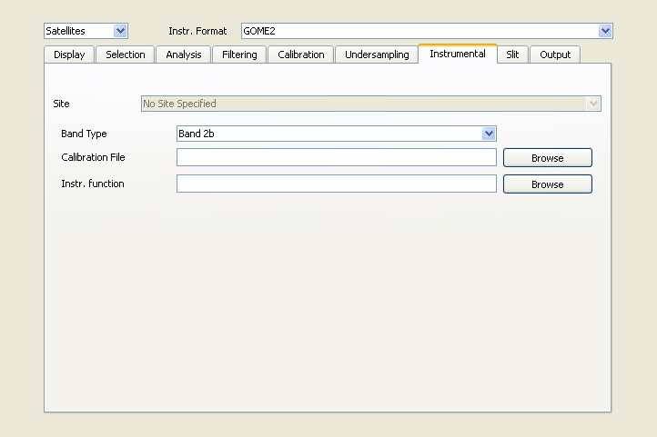

QDOAS Projects properties

The Projects Properties dialog box resumes the general options to configure the application. These options are divided into the following categories :
| Display | selection of information to display with spectra |
| Selection | selection of spectra to browse or to analyse |
| Analysis | options specific to the analysis (analysis method, interpolation, convergence criterion...) |
| Filtering | selection of a filtering method to apply on spectra and absorption cross-sections |
| Calibration | configuration of the wavelength calibration procedure |
| Undersampling | selection of a method to calculate undersampling cross sections and to include them in the fit; |
| Instrumental | options specific to the selected input file format |
| Slit | definition of a slit function or a method to convolve cross-sections before the analysis using the information generated by the wavelength calibration procedure; |
| Output | selection of the information on the spectra that should be saved in the output file after the analysis. |
The creation of a new project always starts with the definition of the measurement type (satellite or ground-based) and the selection of the spectra file format. Before browsing spectra, options in the Instrumental page and in the Display page should be checked. Options in the other pages concern the analysis of spectra and the configuration of the output. They have to be completed with the creation of cross-sections symbols and the settings in the Analysis Windows properties dialog boxes (definition of the spectral interval, specification of the reference spectrum, selection of parameters to include or not in the DOAS fit,... ).